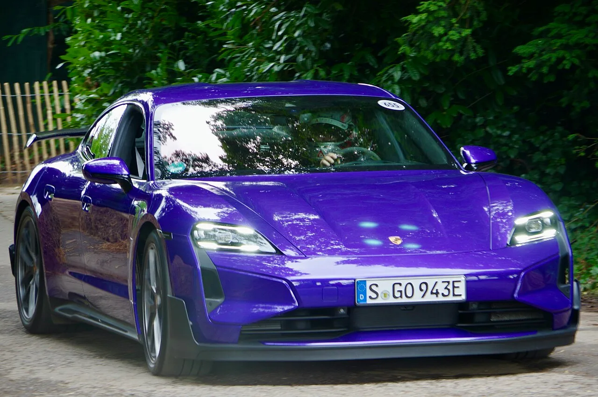

▲ 전동화된 카이엔. 쿠페 버전은 10월 서울에서 국내 첫 공개된다 ⓒ Wikimedia Commons
신차를 전시장이 아니라 축제에서 처음 보여주는 방식이 있습니다.
포르쉐코리아가 10월 3~4일 문화비축기지에서 '포르쉐 바이브 서울'을 엽니다. 이 자리에서 신형 카이엔 쿠페 일렉트릭이 국내 최초 공개됩니다.
같은 공간에서 917 레이스카의 엔진 사운드도 재생됩니다. 소리가 없는 차와 소리로 기억되는 차를 한자리에 세우는 구성입니다.
1. 어떤 행사인가
| 일정 | 2026년 10월 3~4일 (2일간) |
|---|---|
| 장소 | 서울 문화비축기지 |
| 테마 | All Porsche, One Vibe |
| 티켓 | 8월 14일부터 NOL 플랫폼 일반 판매 |
| 문의 | 포르쉐코리아 080-8100-911 |
포르쉐가 국내에서 여는 팬 페스티벌 성격의 행사입니다. 자동차·음악·게임·라이프스타일·커뮤니티를 한 공간에 묶는 구성으로, 신차 발표회와는 성격이 다릅니다.
2. 신형 카이엔 쿠페 일렉트릭
행사의 무게중심은 여기에 있습니다. 신형 카이엔 쿠페 일렉트릭이 국내에서 처음 공개됩니다.
포르쉐는 이 차를 "911에서 영감을 받은 상징적인 루프 라인"을 가진 모델로 설명합니다. 카이엔의 쿠페 파생형이 전동화 버전으로 넘어온 형태입니다. 우아한 비례에 전동화 성능을 얹었다는 것이 브랜드의 설명입니다.

▲ 카이엔 쿠페의 후면. 리어램프가 좌우로 이어지고 'PORSCHE' 레터링이 중앙에 놓인다
다만 국내 사양의 구체적 제원은 이번 발표에 포함되지 않았습니다. 배터리 용량, 인증 주행거리, 출력, 가격은 공개 시점 또는 그 이후에 확정될 사안입니다. 국내 인증 절차를 거쳐야 확정되는 항목들입니다.
3. 카이엔 전동화가 갖는 의미
카이엔은 포르쉐 판매의 중심축입니다. 911이 브랜드의 상징이라면, 카이엔은 실적을 지탱해온 모델입니다.
그 카이엔이 전동화 라인으로 확장된다는 것은 브랜드의 전동화가 실험 단계를 지났다는 신호로 읽힙니다. 앞서 마칸이 전동화 전용 모델로 전환됐고, 타이칸이 전기 스포츠 세단 자리를 맡고 있습니다. 여기에 카이엔 계열이 더해지는 구조입니다.

▲ 앞서 전동화 전용으로 전환된 마칸. 카이엔 계열이 뒤를 잇는 구조다
4. 917 사운드를 함께 트는 이유
행사 프로그램에 917 레이스카의 엔진 사운드 체험이 들어갑니다.
전동화 신차를 처음 공개하는 자리에 내연기관 레이스카의 소리를 함께 배치하는 것은 우연이 아닙니다. 전동화 전환기에 브랜드가 가장 잃기 쉬운 자산이 감각적 기억이기 때문입니다. 배기음과 진동으로 축적된 브랜드 경험을, 소리가 없는 차로 넘어가는 시점에 한 번 더 확인시키는 구성입니다.
| 구분 | 내용 |
|---|---|
| 신차 | 신형 카이엔 쿠페 일렉트릭 국내 최초 공개 |
| 사운드 | 917 레이싱카 엔진 사운드 체험 |
| 커스터마이징 | 존더분쉬(Sonderwunsch) 프로그램 전시 |
| 게임 | e스포츠팀 DRX 협업 아케이드 |
| 공연 | 존박, 개미 등 아티스트 라이브 |
| 커뮤니티 | 포르쉐 클럽 코리아·포르쉐 클럽 서울 밋업 |
| 기타 | 포르쉐 키즈존, 아트카 전시, 라이프스타일 컬렉션 |
5. 관람을 계획한다면
일반 티켓은 8월 14일부터 NOL 티켓 플랫폼에서 판매되고 있습니다. 행사는 10월 3~4일 이틀간이며, 장소는 서울 문화비축기지입니다.
신차 실물 관람이 목적이라면 양일 중 어느 날에 공개 세션이 배치되는지를 확인하는 편이 좋습니다. 페스티벌 형식 행사에서는 신차 공개가 특정 시간대에 집중되는 경우가 많습니다.

▲ 카이엔 쿠페의 루프 라인은 911에서 영감을 받았다는 것이 포르쉐의 설명이다

▲ 타이칸에 이어 마칸, 그리고 카이엔 계열까지 전동화 라인이 넓어진다
6. 정리
포르쉐코리아가 10월 3~4일 서울 문화비축기지에서 '포르쉐 바이브 서울'을 엽니다. 이 자리에서 신형 카이엔 쿠페 일렉트릭이 국내 최초로 공개됩니다.
국내 사양 제원과 가격은 아직 공개되지 않았습니다. 배터리·주행거리·출력은 국내 인증 이후 확정될 항목입니다.
행사에는 917 엔진 사운드 체험, 존더분쉬 전시, DRX 협업 아케이드, 존박·개미 공연이 함께 편성됩니다. 티켓은 8월 14일부터 NOL에서 판매 중입니다.